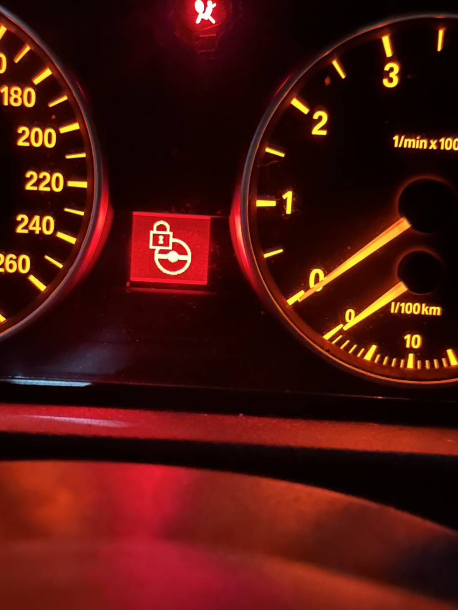

Technical Mission
2026.04.25
BMW 紅色方向盤鎖死
無法啟動：專業數據修復實錄
解決 BMW E世代通病：防盜模組與 ELV 鎖死現地修復，無需更換總成。

Case Overview
車主反映車輛在正常停放後，儀表突然出現紅色方向盤鎖圖示，隨即車輛完全無法開啟電門、無法發動。這是 BMW 經典 E 系列常見的「防盜鎖死」問題。極致核心團隊獲報後，直接前往現場，透過「數據重構」技術，而非傳統的「更換整組硬體」，成功在現地恢復車輛動能。
VehicleBMW E-Series
SystemSecurity v2
IssueELV Locked
StatusFixed
Artisan Approach
面對高階歐系防盜系統，極致核心採取了「數據導向」的修復路徑，有效避免了昂貴的硬體更換：
- 專業診斷： 精確判別故障源自防盜模組計數器異常或數據偏移。
- 數據重構： 在不破壞原車結構的前提下，採集防盜核心代碼並進行加密重寫。
- 鎖定解除： 透過專業協議強制解鎖 ELV 方向盤電子鎖定狀態。
- 功能恢復： 重新匹配數據同步，恢復車輛點火與一鍵啟動功能。
任務圓滿達成。相較於原廠要求更換轉向柱與模組的高昂報價與等待時間，極致核心在現場僅用數小時即完成修復。